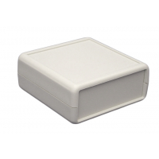
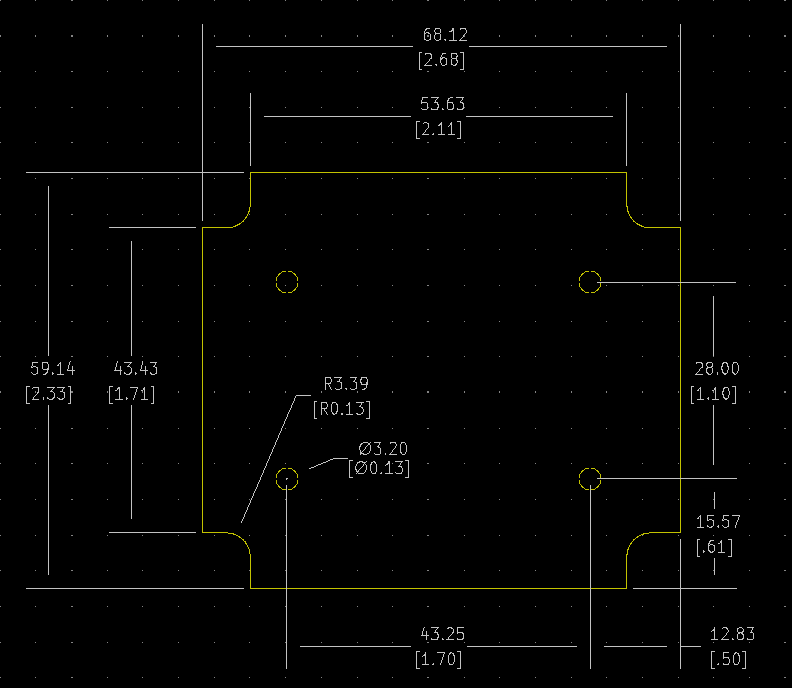

Project template containing the recommended board layout for Hammond Manufacturing 1593Q:
Translucent - Blue: 1593QTBU - HM4015-ND
Gray: 1593QGY - HM360-ND
Black: 1593QBK - HM359-ND
Features:
- Electronic instrument enclosures, ideally suited for mounting printed circuit boards.
- Ergonomically designed for a comfortable fit into the user’s hand.
- Designed to meet IP54 ratings.
- Recessed top for membrane display or pad.
- Units with battery door use our long life "three snap" door.
- Lap joint construction provides protection against dust accumulation and splashing water.
- Molded in a choice of black, grey, or transparent blue general purpose ABS plastic with a satin texture.
- Unit is secured with self tapping screws.
|

|

|
The "Dwgs.User" layer contains all critical dimmensions in milimeters[inches].
The "Edge.Cuts" layer contains the maximum board outline and holes to align with board standoffs.
PCB Preview:
